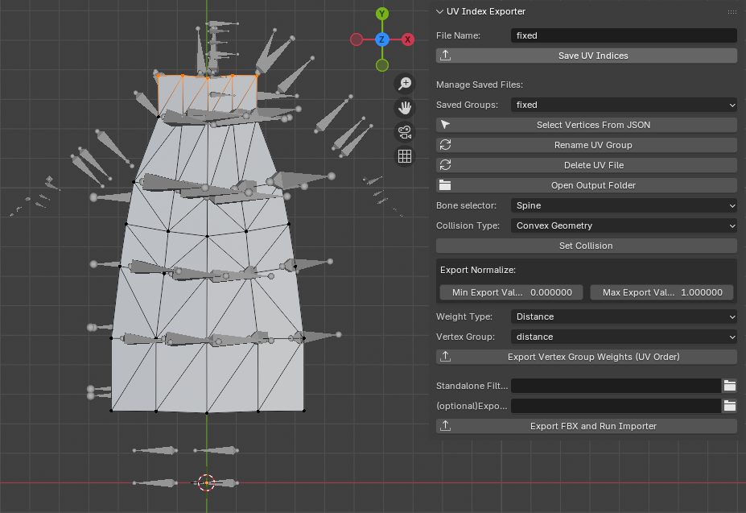
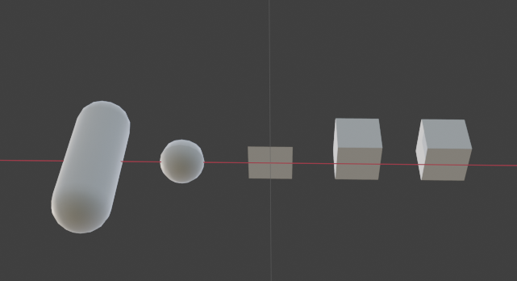
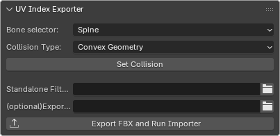
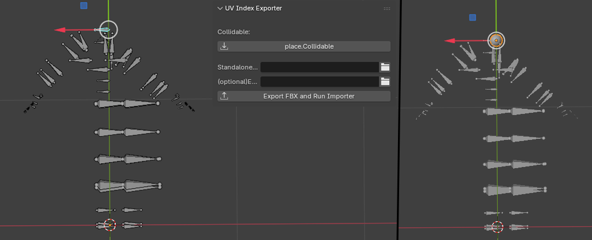
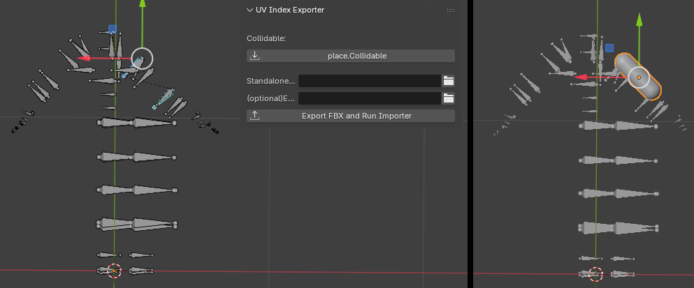
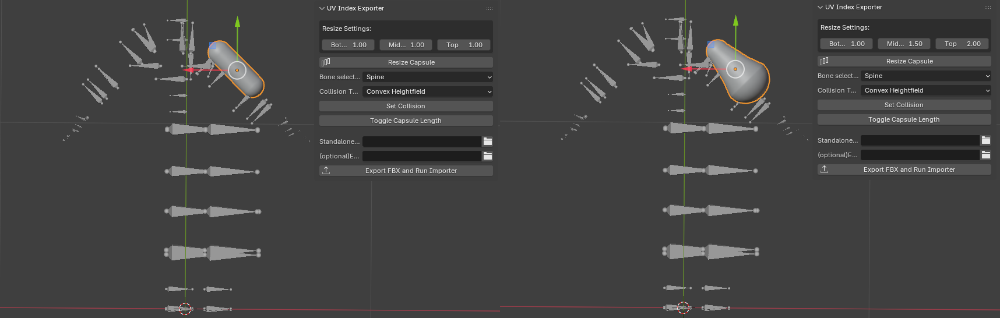

Setting up your mesh for cloth simulation
Havok uses vertex-based cloth simulation, which is what this workflow supports. The simulation is physically accurate, but for performance reasons self-collision is not supported.
Selection Sets / UV Indices
These are vertex selections used to define different behavior zones. Common usage includes:
- Simulated vertices
- Fixed vertices
- Display-only vertices
- Collision or other constraint groups
To create them:
- Select the mesh
- Enter Edit Mode
- Select the desired vertices
- Fill in the Section Name
- Press Save UV Indices

This will create an entry in:
blend_path/export_data/selectionsets/uv_indices.json, oroptional_export_path/selectionsets/uv_indices.json
Vertex Selection Groups
Vertex groups are float-based selections used when non-uniform values are required.
To export a vertex group:
- Create a vertex group on the mesh
- Set Min Export Value and Max Export Value
- Select the Weight Group to export
- Choose a Weight Type
Available weight types:
- Distance Used for distance constraints or collision radii.
- Float Used for modifiers.
-
Angle Used for angle-based modifiers.
-
Press a Export Vertex Group(UV Oder)

The data will be saved to:
blend_path/export_data/floatchannels/weight_groups.json, oroptional_export_path/floatchannels/weight_groups.json
Collidables
Because cloth meshes move dynamically, precise control over their position is difficult. Collidable shapes are used to restrict or guide movement. The following collidable shapes are available:
- Capsule
- Sphere
- Plane
- Convex Geometry
- Convex Heightfield

Notes on Collidables
- Collidable objects use the prefix
collision_<type>so the addon can identify and skip them during processing. - They often include a bone name prefix to assign the collidable to a specific bone.
- Collidables do not need to be parented to the armature and should remain disconnected.
Creating and Assigning Collidables
- Select a mesh or collidable object shape type you want to change
- Choose a Collision Type
- Assign a bone using the Bone Selector (if needed)
- Press Set Collision to convert the mesh into the selected collision shape

If the object is already a collidable, it will be updated except a Bone Selector if already set.
When selecting an armature, a Place Collidable button appears:
- Select one bone in Edit/Pose mode → create a sphere
- Select two bones in Edit/Pose mode → create a capsule


Capsule Resizing
When a capsule collidable mesh is selected, additional resize options will appear.
Capsules can be resized using the following control points:
- Bottom
- Middle
- Top
To resize the capsule:
- Toggle the desired controls (
Bottom,Middle, and/orTop) - Press Resize Capsule to apply the changes

If the capsule's size choses is uneven, the collidable effectively becomes a Tapered Capsule.
Note
Tapered Capsules are not supported by the addon. For proper functionality, it is recommended to convert the collidable to Convex Geometry.